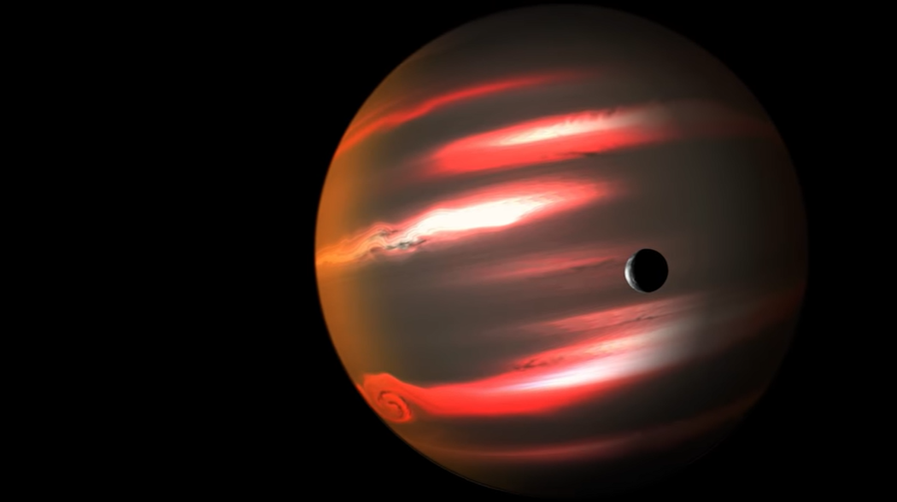

400 light-years away from Earth, there is a planet surrounded by planetary rings that are 200 times larger than the ring that surrounds Saturn, and researchers so far have not been able to understand how this planet was able to attract a ring of this giant size, even though its size is very small for it.
And the rings of this planet So very large that if the rings of Saturn were the same size, they would appear in the sky larger than the full moon.
This planet revolves around a star 480 light years away from the planet Earth and is not very different from the planet Earth, except that this planet resembles the actual perception of hell. The planet is filled with rain of stones and volcanoes that continue all the time, and the temperature on it is terrible, and the planet on one side is always towards the star. The temperature of this side reaches 2000 degrees Celsius, which makes the second side always far from the star, without light or heat, and the temperature on this side reaches 220 degrees Celsius Below zero, this planet was named after the telescope discovered with it
This planet is located more than 750 light years from our solar system. This dark planet has an atmosphere that reflects less than 1% of the light that falls on it and the amount of reflected light is very very little. Even its atmosphere reflects less than raw coal and the small part of the reflected light falling on it takes the red color and this is what gives it its frightening black shape Dim red light
This planet is a giant diamond floating in space At the beginning of the formation of this planet, most of it was carbon, and thanks to the intense pressure and heat caused by the star that revolves around the planet, the planet turned into a giant diamond, and the planet is almost twice the size of the Earth, and a third of the entire planet is diamond, so that it was priced at 26.9 NoNillion dollars. And the NoNillion is one in front of it 30 Zero This planet is located 40 light years from Earth
This planet was recently discovered. And the entire planet of strange snow in this planet is so close to the star that it orbits that the surface of the planet is always burning with a temperature of 439 degrees Celsius. The researchers discovered that the reason that this planet did not melt due to the fire always burning on the surface is the intense gravity of the center of the planet, its gravitational force is so strong that the snow that covers the surface when it melts, the vapor does not move away from it. Thus, the planet will always remain a burning piece of ice